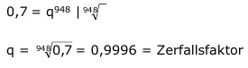

Aufgabe 219 Ein radioaktiver Stoff ist nach 948 Jahren auf 70% seiner ursprünglichen Masse zerfallen. In wie viel Jahren ist er auf die Hälfte zerfallen? M948 = 1 * q948  Mn = M0 * qn 0,5 = 1 * 0,9996n Logarithmieren: lg 0,5 = lg 0,9996n lg 0,5 = n * lg 0,9996 | :0,9996 lg 0,5 - 0,301 n = ------------ = ------------- = 1 771 Jahre 0,9996 - 0,00017